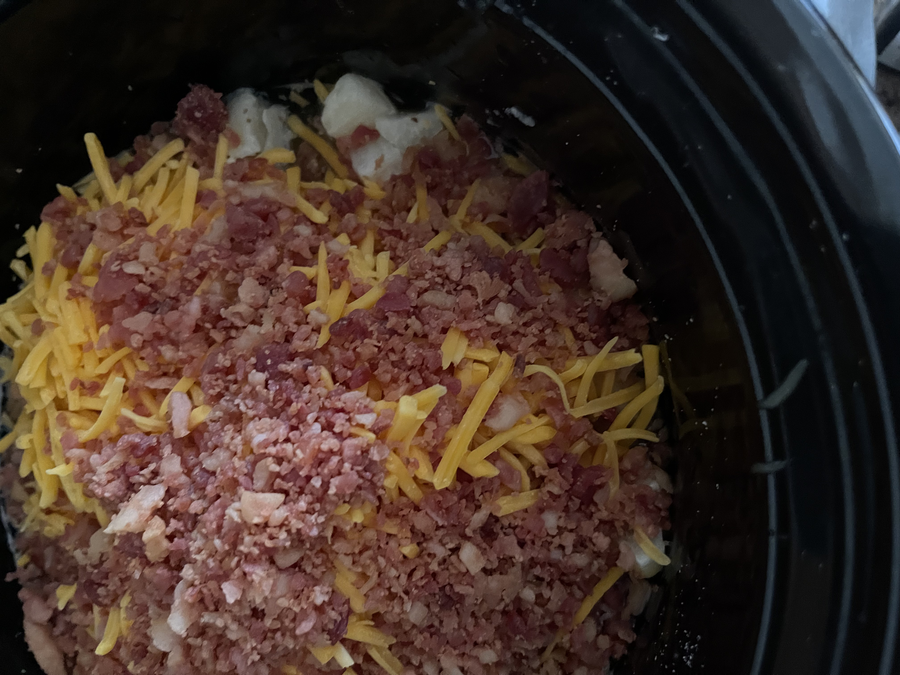
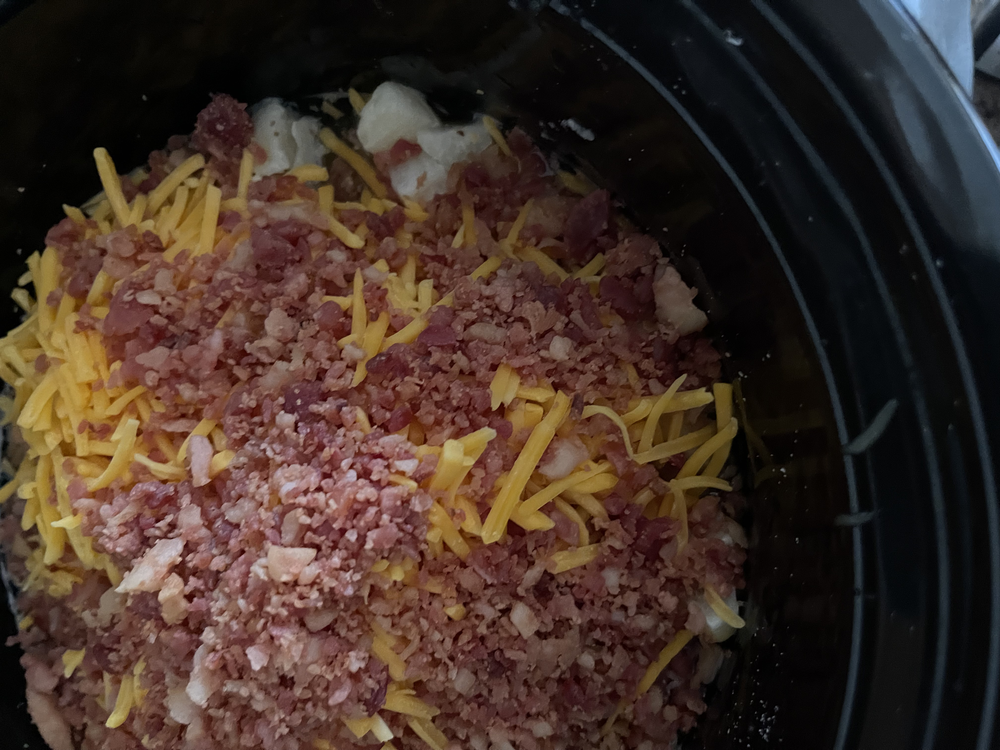

Enjoy this easy budget-friendly recipe!
Time: 3.5-4 on high or 7-8 on low Serves: 6 Total Cost: $8
$1.86 32 oz Frozen Diced Hashbrowns
$2.18 8 oz Shredded Cheddar Cheese
$0.50 14.5 oz Cream of Chicken Soup
$1.22 32 oz Chicken Broth
$0.82 8 oz Cream Cheese
$1.33 3 oz Bacon Bits
 


Combine the hashbrowns, chicken broth, cream of chicken soup, bacon bits, and shredded cheddar cheese in a Crockpot.
Cook on low for 7-8 hours or on high for 3.5-4 hours.
Add cream cheese half an hour to an hour before soup is completed and stir occasionally.
Enjoy!
Cook on low for 7-8 hours or on high for 3.5-4 hours.
Add cream cheese half an hour to an hour before soup is completed and stir occasionally.
Enjoy!